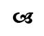
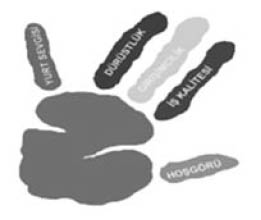

Bilginin Işığı
Anneannemi kaybettim, gittik memlekete, Şerif Dedemin yanında toprağa verdik. Tam 40 yıl önce aynı gün vefat etmişti eşi. Dualar okunuyor, benim gözümde yaşlar; şimdi olduğu gibi… Dedemin mezar taşında babamın yazdırdığı Yahya Kemal’den bir şiir vardı.
Ölüm asude bahar ülkesidir bir rinde
Gönlü her yerde buhurdan gibi yıllarca tüter.
Ve serin serviler altında kalan kabrinde
Her seher bir gül açar; her gece bülbül öter.
Nasıl üzgünüm anlatamam; vedalaşamamıştım pamuk anneannemle. İmam dualar okuyor, ben arkada bir yerde saklanmış mızlıyorum.
Birden babamın tam 40 yıl önce dedemle anneannemin arasına diktiği servinin üzerinde bir kuş şakımaya başladı. Kuşları tanımam, ama öyle güzel ötüyordu ki “cik cik cik” anlatamam.
Bence bir bülbüldü. Ağlamam kesildi. Bilmiyorum sadece ben mi duydum ötüşünü, dua bitene kadar dakikalarca öttü.
Ben yüzümde gülümseme vedalaştım. Anneannem de dua bitince uçtu gitti. “Güle güle anneanne” dedim içimden.
Sıraya geçtik yakınları, herkes “Başınız sağ olsun” diyor. Şahane gözleri olan beyaz sakallı, başında “gönül adamı” takkesi bir amca, “Sen Şerif misin?” dedi.
“Evet?”
İki avucuyla alttan yanaklarımı kucakladı. Baktı baktı, sonra eğildi yanaklarımı kokladı.
“Misk kokuyorsun” dedi durdu. “Senin iki Deden de misk kokardı, Baban da.”
“Nasıl amcacığım?” dedim, bir şey anlamadım.
“Bak” dedi, “dolaş şu koca Demirci’yi, herkese sor, herkes senin Dedelerinin, Anne Babanın iyiliğini, dürüstlüğünü anlatır. Hiç kimseyi kandırmadılar bugüne kadar, etraflarına hep iyilik yaptılar, herkes sizi böyle tanır. Misk kokarsınız oğlum siz” dedi.
Duyduğum gururu, rahatlamayı anlatamam.
Şimdi bizim böceklere “Niye yapıyorsunuz siz bunu? Komisyon mu alıyorsunuz? Ne ücret veriyorlar? Siyasi görüşünüz, cemaatiniz, çıkarınız ne?” diyenleri bizim çocuklar anlayamıyorlar; onlar da bizim böcekleri anlayamıyor.
Neden biliyor musunuz?
Tüm bu gençlerin dedelerinin, anneanne ve babaannelerinin de misk koktuğuna emin olabilirsiniz. O yüzden onlar bizimkileri anlamıyor, bizimkiler de onları.

Ankara’nın 70-80 km dışı, Konya yolu, Karahamzalı beldesi, camı kırık bir ev, yıkık dökük. Cam taktıramamış adam; simsiyah battal boy bir çöp poşeti çakmış pencereye. Evin önünde üç çocuk oynuyor. Birisi gözümün önünde; 5-6 yaşlarında bir kız çocuğu. Evine girince dışarıyı görmüyor, çocuk gündüz evin içerisinde, içeri ışık girmiyor. Soğuğu da kesmez o poşet.
Aradan aylar geçti yine geçiyorum aynı yoldan, kalbim güm güm vurmaya başladı. “İnşallah taktırmıştır camı” diyorum, bir bakıyorum poşet yerinde duruyor.
Ankara’ya dönünce arkadaşları topladım ve anlattım sahneyi. Hep beraber başlattık projeyi.
Binlerce genç, eğitici eğitiminden geçtikten sonra elendiler, elendiler geriye bu gençler kaldı. 100 kişiyi eğiten turuncu böcek oldu, 500’e ulaşan kırmızı, 1000’i geçen bordo, bizler de Mavi Uğur böceği olduk.
Bu satırları yazdığımda 170.000 kişiye ulaşmıştık. En az katkısı olanlardan biri de benim. Siz bu satırları okurken, eğitim verdiğimiz insanların sayısı daha da artmış olacak. En azından bileceksiniz ki, birileri gidiyor bir yerlerde karşılık beklemeden bilgiyi paylaşıyor.
Belki de en iyi yaptığımız şey bu. Bilgiyi paylaşılır hâle getirdi Uğur Böceklerimiz.
Yıllar önce İzgören Akademi’de staj yapan Deniz kızımız vardı; bizden önce İstanbul’da ünlü bir danışmanlık şirketinde staj yapmıştı. Ünlü eğitmen, eğitimine asistan olarak giren şirket çalışanlarının üzerinde kalem var mı diye kontrol ediyormuş, ayrılırlarsa bunları anlatmasınlar diye. Biz, bırakın 40 kişilik ekibimizi, dışarıdan gelen böceklerimizi eğitmen haline getirdik ve “Gittiğiniz eğitimlerde kurumun ve biz hocaların ismini gerek kalmazsa anmayın” diye tembihledik.

Daha önceleri dilenciye para verirdim, oraya buraya yardım ederdim; sonra fark ettim ki, bireysel yaptığın iyiliğin yerine ulaşması ve kalıcı olması çok zor, önemli olan “örgütlü iyilik”. Eğer yaptığınız faaliyeti takım çalışmasıyla ve bir sistem içerisinde yaparsanız kalıcılık sağlıyorsunuz. Yeni buldum ve çok sevdim bu sözü: “Örgütlü İyilik.” Aksi takdirde belki sizden çok para kazanan profesyonel dilencileri beslemekten başka işe yaramıyor çabalarınız.
Sekiz yıl boyunca üç değeri öğretti Uğur Böceklerimiz ve iki temel ilkesi oldu.

2012 Ocak ayı. İngiliz bakan trafik kontrolünde yakalanınca cezayı eşinin üzerine yazdırmış; ortaya çıktı, özür diledi ve istifa etti. Şimdi düşünün Türkiye’yi. Bırak istifayı, bilmem neyi; bırak bakanı, milletvekillerine ceza yazabilir mi polis? Ne ahlaksızlıklar ortaya çıktı Wikileaks’te, kimse istifa etmedi, kılını kıpırdatmadı. O yüzden gittik, Dürüstlük değerini anlattık yatılı okullarda, cezaevlerinde.
2012 Ocak ayı. Üç genç İstanbul’da karda oynamaya çıkmışlar, şehrin içindeki parkta fotoğraf çektirirlerken 20 yaşında genç kapatılmamış kuyuya düşmüş, cesedini buz gibi suyun içinden çıkardılar. Mahalleden bir yaşlı amca, “Oğlum en az on yere, belediyeye, itfaiyeye telefon ettim ‘kapak koyun bu kuyuya’ diye. Hepsi ‘bizim işimiz değil’ dedi, yapmadı” diye anlattı kameralara. Şimdi kapatmışlardır kuyuyu. Daha bir ay önce iki küçük kız kardeş şofben zehirlenmesinden öldü. Aslında her ay ölüyor. O yüzden gittik İş Kalitesi’ni anlattık çocuk esirgemelerde, okullarda.
Çalışma çağındaki insanların %57’si çalışmıyor. Türkiye’de 26 milyon çalışabilecek kadından 20 milyonu çalışmıyor, evde izdivaç programı seyrediyor; neredeyse tamamı da evli. Gençler parklarda ellerinde cep telefonu bomboş oturuyor. Herkes memur olma peşinde, dünyadaki en genç emekli nüfusa sahibiz. O yüzden gittik Girişimcilik anlattık köylerde, ilkokullarda.
Obama’nın askerleri döndü Irak’tan, tüm medya “kahramanlar ülkelerine döndü” tadında verdi haberi. Çarşaf çarşaf görüntülerini yayınladılar Amerikan Başkanı, askerleri ve bayrağının. Alternatif bir TV kanalı gariban bir Iraklıyla konuşmuş, cılız sesi duyulmadı ama ben duyuruyorum size.
Dedi ki Iraklı: “Bunlar geldiğinde bir Saddam vardı, gittiler şimdi on Saddam var. Bir de Amerikalılar geldiğinde bilmezdik kim Şii, kim Sünni. Öğrettiler hepimize öyle gittiler.”
Bize öğretemeyecekler.
En azından öğretemesinler diye iki ilkemiz var: Hoşgörü ve Yurt Sevgisi. Bakın bu ikisini beraber anlatıyorum, çünkü bunlar ayrılmaz iki kavram.
Hiçbirimiz etnik kökenimizi seçmedik, hepimizin inancı anne babamızla aynıdır neredeyse.
Bu ülkedeki her tür inanç, ırk ve dile sahip insan bu ülkenin başının tacıdır, bu bayrağın sahibidir, diye inandığımız için gittik her bölgeye Hoşgörü ve Yurt Sevgisi’ni anlattık.
Hiçbir sponsor yok, bundan sonra da olmayacak.
Bu bir sosyal sorumluluk projesi değil. Eskiden insanlar bu ülkede iyilik yaparlar anlatmazlardı, sonra iyiliklerini anlatır olmaya başladılar. Şimdi yapmayıp anlatıyorlar. Adı da Sosyal Sorumluluk Projesi oluyor.
Bu ülkede inanılmaz paralar kazanıp yurtdışına götüren yabancı şirketler, idareten yaptıkları sosyal sorumluluk projelerinin reklam kampanyalarına, projeye harcadıklarından fazlasını harcıyorlar.
“Hocam, ama şimdi siz de ikinci gruptasınız, yaptığınız iyiliği anlatıyorsunuz.”
Hayır. Bakın bu projeyi hiçbir gazetede, TV’de duymadınız. Bu kitabın içinde de ben ve ekibimin yaptığı hiçbir şey olmayacak. Selin’le beraber tüm ekip bu kitabı yazarken iki temel amacımız var:
Bu gençlerin küçük bir heykelini dikmek. Yaptıkları için onlara teşekkür edip, kendi çocuklarına “Bak biz bunu yaptık” deme fırsatı sağlamak.
Birçok kişiye de, “Malak gibi oturup televizyon seyretmeyi, öküz gibi etraftan şikâyet etmeyi, tilki gibi kendine yontmayı bırak, insan gibi etrafına bir şeyler kat. Bunun için para, bütçe, devlet desteğine gerek yok, sadece biraz iyi niyet ve çaba yeterli” mesajını vermek.
Şunu ne olur unutmayın, rakı masalarında teşhis koymak yetmiyor. Adım atmak lazım. Programda, kitapta hiç siyaset aramayın. Benim hiç siyasi görüşüm olmadı. Şu sağcı-solcu mecliste birbirini yumruklayan adamların mı peşinden gideceğiz? Bunlar mı bize yol gösterecek?
Amaç sadece bulunduğun yere, yaşadığın ülkeye, basit, temel, yararlı şeyler katmak olmalı. Programı daha fazla büyütmek amacımız ve gücümüz yok. Vakıf değiliz, basit bir şirketiz; vergisini ödeyen, maaşları ödeyen, kâr etmeye çalışan, satış yapıp ayakta kalmaya çalışan, %100 yerli, 16 yıllık bir şirket. Öte yandan da bu projeyi yürütmeye çalışıyoruz.
Yeterince Uğur Böceğimiz oldu, daha fazla başvuru kabul etme ve yetiştirme şansımız ve gücümüz yok. Şimdi ikinci aşamaya geçtik.
Küçük İyilik Fikirleri
Bize Uğur Böceği olmak için gelenlere, siz bir projecik başlatın diyoruz. Nasıl mı? Lara Irmak lise 2. sınıf öğrencisi bir genç, İstanbul’da Organ Bağışı Kampanyası başlattı. 10.000’lerce insan Lara sayesinde organ bağışında bulundu.
Ceceli İlköğretim Okulu’ndan Beyaz Uğur Böceklerimiz meyve çekirdeklerini atmadılar, evlerinde saksıya ektiler. Sonra gidip araziye hep beraber ağaçlar diktiler fidanları.
Ufak kızım Simişle benim küçük projeciğimiz şu: Alışveriş listemize kış boyunca buğday da ekledik kuşlar aç kalmasın diye, besliyoruz onları.
Karaman’da Necati Babaoğlu diye bir kahraman, gelirinin büyük bir bölümüyle kitap alıp gençlere okul çıkışlarında, pazar yerlerinde kitap dağıtıyor. Camilere kütüphaneler kuruyor.
Barış, ilkokul öğrencileriyle üniversite öğrencilerini bir araya getiren bir proje yapıyor; çocuklar okumanın değerini fark etsin diye. İstanbul’da Uğur Böceğimiz Ramazan, üç arkadaşıyla huzur evi ziyaretlerine başladı, şimdi sayılarını arttırdılar. 500’e yakın gönüllü huzur evlerine ziyarette bulunuyorlar.
Bu kadar basit; proje bile değil, projecikler yapın. İyilik fikirlerinizi, iki kişi de olsanız hayata geçirin. Özellikle küçükleri katın projelere; onlara vereceğiniz cesaret, ileride bu çocukların vakıflar kurmasına, değer katmasına, cesur olmalarına, ama en önemlisi hayırlı, iyi birer insan olmalarına yol açar.
Bundan daha değerli bir şey yok.
Süpermen ve Uğur Böceği kitabının geliri projeye ait; yayınevi bu kitaptan da gelir elde etmeyecek. Yazarlar olarak biz de telif almayacağız. Projeye bağış olarak gidecek.
Bu gençleri lüks salonlarda, ışıklar altında görme şansınız yok. Öğrencim Murat anlattı, İngilizce isimli bir projeye katılmış, adını bilmiyorum açıkçası, onlarca yabancı şirketin sponsor olduğu bir çalışma. “Son derece lüks otel salonları, kokteyller. Beni bir mülakata aldılar, jüridekiler leş gibi alkol kokuyordu hocam” diye anlattı.
Öte yanda gecenin 2’sinde, 3’ünde otobüs garlarında bekleyen, cezaevlerinde soba başında eğitim veren bizimkiler.
Sponsorlar, bütçeler olmayacak emin olun.
Size şöyle anlatayım: Bir dost kuruluş projeye 0 km minibüs hibe etmeye karar verdi. “Tek ricamız sadece proje için kullanılsın” demişler. Yönetim kurulu toplantısında değerlendirdik. Araç binanın önünde duracak, yarın öbür gün gerekir ve şirket için de kullanabiliriz, ahlaklıca olmaz dedik ve teşekkür edip almadık hediye minibüsü.
Enayice değil mi?
Üç tür insan vardır.
- Hep başkalarının üzerinden geçinenler
- Sırf kendi için çalışanlar
- Kendi kadar etrafındakiler için çaba gösterenler
Bu üçünden birini seçin kardeşim. Hiç öyle evelemeyip gevelemeyin. Hayat şartları vesaire demeyin bana, en azın azından kendinize dürüst olun.
Şimdi deyin ki kendinize, “Taparım paraya, çalışmadan nasıl kazanırım hep ona bakarım. Aklım fikrim akrabamı, kardeşimi, dostumu nasıl kandırır, onların üzerinden sülük gibi nasıl komisyonumu alırım orada. Ben buyum.”
Ya da, “İkinci grubum. Basarım tekmeyi herkese, arkama bakmam yürür giderim. Başaracağım ben, kendime harcayacağım. Amerikan zihniyeti var bende” deyin.
Ya da… Hayrettin Karaca, Aşık Veysel, Üstün Ezer, Adnan Kahveci gibi vakıf kuran, icat yapan, geride bir şeyler bırakan bir adam olun. Ama yeter ki dürüst olun, en azından kendinize karşı.
İlk iki grupta olup da delikanlıyım ben diye dolaşmayın.
Mardin Musa Cihaner Çocuk Yurdu’ndayım. Eğitim öncesi yurdu dolaşıyoruz. Esra var, 9-10 yaşlarında, yerinde sallanıp duruyor. Geçen hafta babası annesini öldürmüş namus cinayeti diyerekten. Üç kardeşler, biri altı aylık. Eğitim bitti, çimdirdi çocuklar beni, sarıldık öptük birbirimizi. Keşke zamanında gelip babayı anayı eğitebilseymişiz diye düşündüm çıkışta.
Çocuk yurtlarında (SHÇEK) küçük çocuklar çimdirir böyle bazen; önce şaşırırdım, sonra bir müdürden öğrendim. “Ana-babasız büyüdükleri için sevmenin böyle bir şey olduğunu zannedenler oluyor, senin kolunu, ‘seviyorum seni’ diyorlar.”
Hiçbir halt yemiyorsanız, en azından gidin elinizi kolunuzu uzatın, çimdirsin küçükler.

Uğur Böcekleri neler yaptı hatırımda kalanlar kadar kalmayanlar da vardır. Unuttuklarımızdan özür dilerim şimdiden.
Fulya gitti memleketine, kendi başına Düzce’de depremzedelere destek oldu. Hayriye, Elmalı’da kahvenin önünde kurdu masayı, sabahtan akşama küçük çocuklar için kitap bağışı topladı. Nihan, Merve ve Oğuz’u hep üçlü hatırlarım. İlk projeyi onlar başardı; gittiler Minnetler Köyü’ne bilgisayar kütüphanesi kurdular. Tuğba Uğur Böceğimiz, köyde temizlik, boya yaptırdı; tertemiz bir köy oluşturdular. Yine bu üçü Polonya’dan ABD’ye kadar uzandılar eğitimlerle.
Ahmet Ege’yi sırt çantası ve güler yüzüyle, Tuğba’yı da cesaretiyle anıyorum; gittikleri yere ışık götürdüler.
Sinem’in üniversitenin bahçesindeki korsan seminerinin fotoğrafına çok gülmüştüm. 15 kişi var resimde, üç dinleyiciyle başlamış, sonra diğerleri “bu seyyar satıcı herhalde” diye gelmişler mutlaka.
Hatice’nin Muhtar Amca’yı ikna edişini burada okudum; bana hep e-postalar atıp cesaret verişini unutamam.
Sevgi bir akşam karanlıkta yürüyerek seminere giderken annesi arıyor, “Kızım akşam akşam ya başına bir şey gelirse?” diyor. “Anne ben Uğur Böceğiyim kötü biri gelirse uçar giderim” diyor. Annesi anlattı bana, “Öyle deyince ben gerçekten rahatladım, kapattım telefonu” diyerek güldü.
Yine bir Uğur Böcekleri gününde bir anne geldi. “Ben evladımın neler başarabileceğini bilmezdim; bugün gördüm ki, benim yaptıklarımdan fazlasını bu yaşında yapıyor, güvenim geldi çocuğuma sağ olun” dedi. Mervaların Kırıkkale’den getirdiği, eğitimlerimize katılan o iki öksüz çocuğun duygularını da unutmam.
Öykü’nün o kadar anlattığı dersin sonucu ise süper: “Arkadaşımın saçını bir daha çekmeyeceğim.” En azından bir kızımızın saçını kurtardık.
Volkanım ise Antalya’da dirayet ve bağlılık örneğidir, en son Erzurum’a gitti cezaevine Gökçe’yle birlikte, dışarıdan üniversiteyi okudu. Proje sırasında kendini en çok geliştiren birkaç böcekten biridir Volkan.
Sinem’in babası yağlıboya bir Uğur Böceği çizmiş, şimdi böceklerin odasında duruyor, Zeynep Ertürk’le itişmelerine bayılırdım.
Menderes, “Sadece 60 kişiye ulaştım, az” diyor, yaptığı fedakârlıklar, koşturma ve emeğini bilseniz, aslında 600 kişiye destek vermiştir emin olun.
Taşkın’la karlar içinde Zigana’dan geçişimizi hatırlıyorum; benzin bitti bitecek, yüzümüzde gülümseme, şahane restoranlar. Taşkın, Gümüşhane’de ve çevresinde seminerler verdi. Bununla yetinmedi kendi iyilik fikrini geliştirdi. Görme engellilerin kitapla buluşmalarını sağlayacak bir projenin liderliğini yapıyor. Gümüşhane’nin uğuru oldu aslında.
Songül Kayseri’de durdurulamaz bir güç, “Ben dişi Şerif İzgören’im seni geçeceğim” diyor, Kayserili ya, geçer emin olun.
Aslı ve Ayşe’yi tam ayırt etmeye başladım, proje bitti. Çok şey kattılar sağ olsunlar, iki kardeş gibi…
Okan İzmir çocuğudur; onun yaşları tam hava, statü, para yaşlarıdır. Hiç umurunda değil biliyor musunuz, tevekkül sahibi, sağlam adam. İzmir’de tek başına ayakta durur.
Orhan insanlık timsali, projenin ağabeyi, Hızır gibi yetişir ekibe. Gençlere destek olur, Uğur Böcekleri’nin dürüstlük, insanlık, iyilik abidesidir. Üç değer ve iki ilkemizi davranışlarına en çok yansıtandır.
Kendi ekibimizden bahsetmeyeceğim, Zafer dışında. Çünkü benden çok emeği var projede. Bursa civarında on altı bin ağaç dikti. Onun Küçük İyilik Fikri de bu.
Elif’i bir gün Uğur Böcekleri; gününde uzaktan seyrettim, “Küçük Dev Kız” dedim içimden, romantik romantik, süper eğitim veriyordu.
Merve’yi, Nazlı’yı hep ışıldarken hatırlarım yüzleri. Her organizasyonda, çay getirmekten seminer vermeye, her şeyi yaptılar.
Hakan, emlakçı. Ne kadar işine koşsa o kadar kazanır aslında; bıraktı bir kenara parayı adamlık yaptı, çocuk mahkûmları okuyunca burnumun direği sızladı.
Hidayet’ler ayrı yerde gönlümde. Biri devlet memuru, diğeri mühendis. Birini eski tanırım; dobra dobra bir insandır. Çok iş yaptı. Diğer Hidayet raporlarda başarı timsaliydi; en son LÖSEV çalışanlarına verdiğim eğitimde tanıştım, gurur duydum.
Davut Diyarbakır’ın köylerini dolaştı. Tam bir emekçidir; hiçbir şeyden yüksünmez, çalışkan mı çalışkan, gençlerle dostluğunu hep sürdürdü, yüreğini koydu projeye.
Ayşe, Aydın’da, üniversitede çok yoğun çalışıyor. Bütün yoğunluğuna rağmen gelen seminer taleplerini hiç geri çevirmez. İkinci dönem İyilik Fikri sahiplerinin projelerine seminer desteği veriyor. Uğur Böceği olmak doğasında var.
Kürşat Kırmızı Uğur Böcekleri’nden; her yere gidip seminer vermek için can atanlardan. Seminerlerinde öğrencilere yaptırdığı farklı uygulamalarla fark yaratıyor.
Beyda, Kırmızı Uğur Böceği olarak Kocaeli Bölge Müdürlüğümüzün demirbaşlarından. İstanbul, Kocaeli, Sakarya demeden, dur durak bilmeden seminerler veriyor. İyilik Fikri sahiplerinin projelerine de destek veriyor.
Adını anamadığım böcekler kusura bakmayın olur mu? Andıklarım, hayatımın bir şekilde bir yerlerde kesiştikleri… Ülkenin her yanında hepiniz çok güzel şeyler yaptınız; sağ olun çok.

Diyarbakırlı bir kızımız, eğitim aldığı Uğur Böceği ablasına, “Ben 8. sınıf öğrencisiyim, okulum bitiyor, beni seneye amcamın oğluyla evlendireceklerdi, ben de kabullenmiştim. Sen bize Âşık Veysel’in görmeyen gözleriyle köyüne ilk meyve ağacı diken adam olduğunu anlattın. Eğer o görmeyen gözleriyle bunu başarabildiyse, ben gören gözlerimle daha fazlasını başarabilirim. Abla sana söz, kimse artık beni 15 yaşımda amcamın oğluyla evlendiremez. Ben okuyup doktor olacağım, size bir hastaneden doktor olarak mektup yazacağım.”
Sekiz sene eğitim almış. Sonuç: “15 yaşında amcamın oğluyla evlenip köyde kalacağım.” Bir abla gitmiş bir saat eğitim vermiş: “Ben doktor olacağım size bir hastaneden mektup yazacağım.”
Hangisinin adı eğitim?
Sekiz sene gördüğü, ruhunu kaybetmiş adamın anlattığı müfredat mı? O ablanın hayal gücünü büyülemesi mi?
İzgören Akademi Kayseri Bölge Müdürlüğü’nün duvarında bir değerlendirme formu var. “Bazı ağabeyler bize gelip dağa çıkmayı anlatıyorlardı, ben de onlara inanıyordum. Abla bize Atatürk’ü, Çanakkale’yi anlattı; ben onun demek istediğini anladım, kimse artık beni dağa çıkartamaz.”
Bir gün Sakarya’da bir konuşma yapıyorum, seminerin sonunda güler yüzlü bir delikanlı el kaldırdı. “Ben imamım, aynı zamanda Uğur Böceğiyim, Sakarya’nın şu köyündeyim. Bazen bakıyorum diyanetin yolladığı metin tekrar metni, koyuyorum kâğıdı cebime, anlatıyorum insanlara dürüstlüğü, yurt sevgisini, Uğur Böcekliğini, cemaat bir dinliyor bir seviyor anlatamam.” Toplantı salonundakiler kahkahaya boğuldu.
Mehmet Bey aradı beni üç dört gün önce, “Hocam bizi belki hatırlamazsınız ama…” dedi. “Esra ne yapıyor?” dedim. Karşıda uzun bir sessizlik. “Hocam gerçekten hatırlıyor musunuz Esra’yı.” İki kardeşi vardı, biri altı aylık. “Hocam Esra çok başarılı bir kızımız oldu, ötekiler de iyiler. Unutmadığınız için sağ olun, biz sizi unutmuyoruz, duvarlara sözlerinizi astık” dedi. Parti liderleri, holding sahipleri, çok değer verilen o adamları hiç hatırlamam, telefonları yoktur bende, kaydetmem, ama Esracıkları unutmam hiç.
Mehmet Bey Mardin Musa Cihaner Çocuk Yurdu’nun Müdürü, pırıl pırıl insandır. Onları tanıyınca görüyorsun ki, ortada kurumlar falan yok, insanlar var.
Bir adam geliyor kuruma, harikalar yaratıyor; bir başkası geliyor, bürokrasi, rüşvet, din adı altında belli tarikatların adamlarını oraya yerleştirme, kötülük, yavaşlık, şikâyet kültürü...
İnsan var dokunduğu şeye değer katar, insan var dokunduğuna değer kaybettirir.
Gökçe Ateş, İzgören Akademi Antalya ekibinden, hem de Uğur Böceğimiz. Alanya Cezaevine eğitim vermeye gitti, döndüğünde şunları yazmış:
24 Şubat Cuma günü Kendi Hayatının Lideri Ol semineri için Alanya L tipi cezaevindeydim. Seminerde 110 kişi vardı ve oldukça keyifli geçti herkes açısından. Seminerin sonunda çok aşırı milliyetçi duygularını bastıramayan bir katılımcının “Türk çocukları yerden çorba yalamaz1. Ve eşeğin heykeli var diye, biz o dönemdeki nice kahramanları görmezden gelmeyiz” eleştirilerini almış olsam da dördüncü cezaevi tecrübem “iyi” diyebileceğim kadar iyiydi diye düşünüyorum.
Cezaeviyle ilgili olarak dikkatimi çeken bazı detaylar vardı, bunları sizlerle paylaşmak istedim.
2007 senesinde hükümlü kabulüne başlayan cezaevi açık ve kapalı olmak üzere 2 birime sahip.
Şimdiki cezaevi müdürü Sabri Karataş, hatırladığım kadarıyla, 4 yıl önce buraya atanmış ve geldiğinde, hükümlülerin sürekli kavga ettiği, yaralamaların çokça olduğu bir ortam varmış. Kalan kısmı kendi cümleleriyle anlatıyorum: “Mahkûmlar enerjilerini bir yere aktaramadığı için birbirlerine düşüyorlardı, ben de bu enerjilerini bir yerlere aktarmalıyım diye düşündüm.”
Cezaevinin kendine ait 2 çim sahası var ve eski müdürü burayı kullandırtmıyormuş. Yeni yönetim çim sahayı kullanıma açmış, 2 haftada bir futbol maçları yapıyormuş hükümlüler (ilk maçta bir hükümlü köşeye çekilip dakikalarca ağlamış, nedeni de 7 yıldan beri ilk kez toprağa basmasıymış), her hükümlüye günde yarım saat spor yapma hakkı tanınmış.
Bunların dışında 3 adet atölyeleri var: Ahşap oymacılığı, su kabağı işlemesi, bakır işleme. Bu atölyelerde mahkûmlar çalışıyor ve ürünleri satışa çıkarıyorlar. En önemlisi de Alanya’nın yöresel ürünü olan su kabağı işlemeciliği. Yurt içinde pek çok bölgeye satışını yapıyorlarmış ve yurt dışından da sipariş gelmeye başlamış, yakında ihraç bile edilecek. Müdür Bey 2011’i, yanlış anımsamıyorsam, “550 bin TL kârla kapattık” dedi.
Ve şu an cezaevinde tek bir olay yaşanmıyormuş. Öyle ki, normalde (benim gördüklerimde en azından) koğuşlarda plastik bardaklar kullandırtılıyorken, burada yönetim tüm koğuşlarda cam bardağa izin vermiş, mahkûmlar bu haklarını kaybetmemek için ayrı bir özen gösteriyorlarmış birbirlerine olan davranışlarına. “Çünkü tek bir olayda, kavgada kaldıracağımı biliyorlar” dedi Müdür Bey.
Güneş enerji sistemi takılmış; böylece suyu ısıtma masrafından kurtuldukları gibi alan tasarrufu da yapılmış. Kendi planladığı bir çizime göre yaptırtmış bu dizaynı; yanları açık bir otopark, çatısı da günısısı sisteminden oluşturulmuş.
Zeytin ağacı tohumları getirtmişler ve mahkûmlarla birlikte her tarafa ekmişler. İlerleyen zamanlarda bu zeytinlerin tümünü satışa çıkaracakmış. Şu an cezaevi fuel oil ile ısınıyor. Sabri Bey buna bir son vererek tasarruf etmek istediğini söylüyor. Bunun için de bir zeytinyağı fabrikası ile anlaşarak zeytin kabuklarını alıp bunları yakıt malzemesi olarak kullanacakmış. Bir fabrika bu yöntemle üretim yapıyormuş ve bunu da cezaevine uygulayacaklar.
Bunların dışında kütüphaneye her sene yeni kitaplar satın alıyormuş. Eğitime ve okumaya çok önem veren bir insan. Cezaevinde sürekli bir etkinlik var; tiyatrolar, kurslar vb. Zaten Alanya Ticaret Odası ile sıkı bir işbirliği içerisindeler bu eğitim etkinlikleri ile ilgili olarak.
Aklımda kalan ve önemli olduğunu düşündüğüm birkaç notum bunlar oldu. Ve Alanya Cezaevi Türkiye cezaevlerinde ilk 5’e girmiş geçtiğimiz yıl. Sabri Bey ve onun kadrosu ile tanışmak beni cidden çok memnun etti, onlar gibi insanların varlığını bilmek de çok kıymetli bir şey diye düşünüyorum.
Kurumuna, ülkesine değer katan bir adam. Bir de Zafer’le benim Bozcaada’da yaşadığımız basit bir örnek; tam zıttı. Yıl 2009. Zafer’in okulu. Bozcaada İskelesi girişinde, İstiklal İlköğretim Okulu. 2009 Eylül’ü, Orhan, Zafer, ben dalışa gittik. Orhan da, Zafer de Uğur Böceği. Orhan, “Buraya kadar gelmişken çocuklara bir konferans versek ya” deyince ben de coştum. Girdik okula. Yönetici, odasında uhuyla bir şeyler yapıştırıyor.
“Merhaba” dedik.
“Evet” dedi.
“Merhaba”nın cevabı evettir; “Ne var, ne rahatsız ediyorsunuz?” anlamında kullanılır. Zafer, garibim, anlattı yöneticiye, “Ben bu okulun mezunuyum, biz okullarda ücretsiz ‘yurt sevgisi’ eğitimleri veriyoruz. Bu arkadaşım da yazar, çok şahane konuşur vallaha…” diye dikkat çekmeye çalışıyor, ama adam uhuya öyle odaklanmış ki, kafasını kaldırıp bize bakmıyor bile. Ben “Kalk Zafer, biz arkadaşın meşgul bir zamanına denk geldik. Gidelim abi” dedim. Bu kafayı kaldırdı, “Seminer vermek istiyorsanız, Çanakkale Milli Eğitim Müdürlüğü’ne yazılı dilekçe vereceksiniz. Valilik onaylarsa, biz de uygun bir zaman ayarlayabilirsek, bakarız” dedi.
Biz birbirimize baktık.
İkametgâh ilmühaberi ve temiz kâğıdı getirmeden kurtardık ya, o da yeter.

Bir akşam Gazi Yetiştirme Yurdu’na gittik Uğur Böcekleri olarak. Ahmet, Elif, Selin, Gaye, şu anda adını hatırlayamadığım sürüyle böceğiz. Seminere katılan 8 kişi, biz onlardan fazlayız. Ergenliği geçmişler pek dinlemiyorlar beni, sonra yavaş yavaş kaynaştık anlattıklarımı sevdiler, ama biri özellikle, o hiç ısınamadı bana. Çıkışta geldi yanıma, “Bir şey söyleyeceğim” “Evet?”
Sen şu You Tube’da semineri dolaşan adam değil misin, burada ne işin var?
Evet, düştük oralara.
Hem ünlüsün, hem burada ne işin var.
Ben ünlü değilim.
O zaman You Tube’da ne işin var?
Benim herkese anlatmaya çalıştığım, seminerlerde görüntülerimizi gizli gizli çekenlere “lütfen çekmeyin, lütfen internete koymayın”, televizyonculara “lütfen çekim yapmayın, sadece öğretmenlik yapan bir adamım” diye anlatmaya çalıştığım şeyi, o bana çat diye anlattı. Gazetesi, TV’si, bu pop kültürünün içine düşünce kıçı kalkmayan adam görmedim. Onlardan olmak istemiyorum, o yüzden sizden ricam, ne olur görüntülerimi yaymayın. Benden eğitim almak istiyorsanız Vizgo.net’te yasal eğitimlerim var, çok cüzi ücretlere eğitim alabilirsiniz, ortalığa düşürmeyin beni. Evet, ün=para, ama ikisinin de Allah belasını versin.

Projenin eksikleri neler?
Davut Diyarbakır’ın köylerine kadar eğitimlere giden çok mert bir Uğur Böceği. Bir gün beni aradı, “Hocam orada eğitim verdiğim pırıl pırıl çocuklar vardı, aradan bir sene geçti, terör örgütü akıllarına girmiş ve çocukları sempatizan yapmışlar. Onlara uzaktan destek olamadığım için üzgünüm…”
Birincisi, bu eğitimlerle hayal güçlerini büyülüyoruz, öte yandan kalıcı ilişkilerle bu etkinin devamını sağlayamıyoruz. Buna bütçemiz, zamanımız yok. Hedefleme şansımız da yok, çünkü bu konularda danışmanlık yapacak eğitimimiz de yok.
İkincisi ise İzgören Akdemi de, Elma da, sektörde çalışma disiplinleri ve profesyonellikleri ile çok ayrı yerlerdeler. Gittiğim her yerde, hızlı geri dönüşlerimizden, iş disiplinimizden örnekler duyuyor ve gurur duyuyorum. Projede ise böyle bir sistemimiz olmadı. Kayıtlar zayi, planlama az, projelendirme öyle, bilgisayar izlemesi yeterli değil.
Bunları yazarken, ülkede profesyonel çalışan kurumlardan kat kat daha iyi olduklarını biliyorum, ama bizim iş yapış düzeyimize uygun değil. Çünkü iş yapmanın çok zor olduğu bir ülkede (fatura kes, vergi öde, planla, iş yap) sponsorsuz bu işi yürütmeye çalışıyoruz. O yüzden böceklerimize desteğimiz istediğimiz düzeyde olmadı, arada hizmetleri gözden kaçanlar olabilir. Özür, özür, özür, aynı zamanda teşekkür, teşekkür, teşekkür.
Bir de, en son gittiğim Niğde Sevgi Evi’nde öne oturmuş olan protokolden özür diliyorum; hani sizi kaldırıp arkaya oturttum, çocukları ön tarafa aldım ya, üç nedeni vardı:
Arkada otururlarsa sohbetime katılmazlardı.
Ben o çocuklara seminere gelmiştim protokole değil.
Onlar küçük ya sizin boylardan beni göremezlerdi, o yüzden sizi geri attım.
Siz efendilikle arkaya geçerken, önemli bir adam arkaya geçince pek bozuldu bana. Ben de orada çocukların önünde bir şey diyemedim, buradan inceden açıklayayım dedim.
Oradaki ihtiyaç içindeki çocuklarla bir araya gelmemi sağlayan Şahin’e, Ogün ve Suna’ya çok teşekkür ediyorum. Bir de, çıkışta bana güzel şeyler söyleyen tüm o Vanlı depremzede kedilere buradan sıkı sıkı sarılıyorum. Sizin kalpleriniz de o kadar depreme dayanıklı ki, hiçbir şeyden korkmayın.

Uğur Böcekleri’nden Nurgül, bir gün ilk eğitimine girecek, nasıl bir giriş yapacağını bilmiyor. Çok heyecanlı, tam içeri girerken dışarıda bir odun buluyor, alıyor eline giriyor içeri. Sahnede elinde odunla dolaşan bir konuşmacı. Herkes korkuyla bakıyor; “Ben Uğur Böceği olmadan önce elimde gördüğünüz gibi bir odundum, şimdi gördüğünüz gibi yontuldum, kurşun kalem oldum” diyor. Bunu açıklama nedenim, elinde odunla seminer veren başka böceğimiz yok; odunlu tek Uğur Böceği Nurgül. Onu gördüğünüzde kıpırdamadan oturun, dinleyin ve seminer boyunca salavat getirin.

Kafamda çerçeve oturunca, Selin ve Bürge’yle Bulvar Palas’taki eski iş yerimizde, Genel Müdürümüz Umut’un yaşadığı mağarada buluştuk.
Ben gece program için bulduğum süper ismi ikisine de açıkladım. O kadar güzel bir isimdi ki destek vermeme ihtimalleri yok. Açıkladım projenin adını: Türkiye Ayçiçekleri Projesi
İkisinin bana, “Yuh Öküz” diyen bakışlarını unutmuyorum.
“Emin misiniz Hocam? Belki projenin ruhunu daha iyi anlatan bir isim bulabiliriz” dediler.
Ben, “Ayçiçekleri güneşi takip ediyor ya, hani ayçiçekleri de bilgiyi takip edecekler” falan diye onları ikna etmeye çalıştım.
Dinlediler, ama bakışlarındaki acıma hissi, zekâ düzeyim hakkındaki üzüntü hiç değişmedi. Ben o bakışa ilkokul birden beri çok alışık olduğum için alınmadım.
Projenin adını Selin ve Bürge koydu bence. Onlar olmasa Ayçiçekleri Projesi ya da bilemedin benim alternatifim hamam böcekleri falan olurdu.
Kendi ekibimdeki Uğur Böcekleri’ne ayrı ayrı teşekkür etmeyeceğim. Birbirimizle yeterince omuz omuzayız zaten. Sadece dışarıdan birkaç kişi var ki, adları duyulmadan, programı gerektikçe omuz ve diğer varlıklarıyla desteklediler. Onların gözlerinden öpüyorum: Ataman Özbay, Necati Babaoğlu, Bekir Ci oşkun.
“Hocam biz de eğitmen Uğur Böceği olabilir miyiz?»
Artık siz programı seçmiyorsunuz, program sizi seçiyor.
Yeterince Uğur Böceğimiz var zaten, uçuyor ve yürütüyoruz programı. Daha büyütürsek ya siyaset girer ya para ya cemaatler, güç falan. Sadece eğitmen akademimizden seçtiklerimizi yetiştiriyoruz.
Siz de Uğur Böceği olmak isterseniz… Program ikinci basamağında. Bir fikir başlatın diyor ve proje yönetimi eğitimi veriyoruz ve salıyoruz doğaya. Oradan bir Hayrettin Karaca çıkarsa tamamdır.
Siz de bir fikir bulun.
Bilgi, iyilik, girişimcilik içersin.
Çıkarsız, parasız, emek isteyen bir insanlık projesi için:
Atın adımınızı.
Çıkın yollara, bizim gibi…
Yalnız unutmayın;
Anne babanız size terlik pabuç almayacak.
İyilik yapın karşılık beklemeyin.
Bilgiyi paylaşın, karşılık beklemeyin.
Balik bilmezse Halik bilir.
Ahmet Şerif İzgören
07.03.2012
Ankara’da bir kafe. Kenya kahvesi + sıcak elmalı turta
+tam şimdi güneş ışığı
1 Yerden çorba yalayan çocuk, Cevat Şakir Kabaağaçlı’nın Mavi Sürgün kitabında anlatılan, işgal yıllarında Üsküdar’da geçen bir olay.